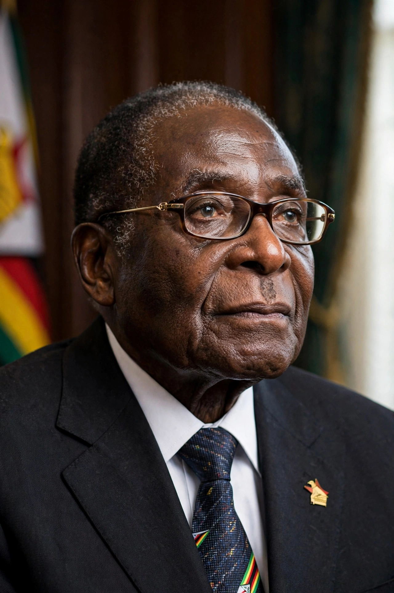

| Robert Mugabe | |
|---|---|
 Mugabe in 2009 | |
| Born | Robert Gabriel Mugabe, 21 February 1924, Kutama, Southern Rhodesia |
| Died | 6 September 2019 (aged 95), Singapore |
| Office | Prime Minister of Zimbabwe (1980–1987); President of Zimbabwe (1987–2017) |
| Party | ZANU–PF |
| Spouses | Sally Hayfron (d. 1992); Grace Marufu |
Robert Gabriel Mugabe (21 February 1924 – 6 September 2019) was a Zimbabwean revolutionary and politician who led Zimbabwe from independence in 1980 until his resignation in 2017 — first as prime minister (1980–1987) and then as president (1987–2017). Initially hailed internationally as a liberation hero, he became increasingly criticised as an authoritarian ruler under whom Zimbabwe's economy collapsed and human rights abuses multiplied.
Mugabe was born at Kutama Mission, west of Salisbury (now Harare), and educated at Jesuit mission schools before training as a teacher. He studied at the University of Fort Hare in South Africa — where his contemporaries included other future African leaders — and taught in Northern Rhodesia and Ghana, where he absorbed Kwame Nkrumah's pan-Africanism.
Returning to Southern Rhodesia in 1960, he rose in the nationalist movement, co-founding the Zimbabwe African National Union (ZANU) in 1963 after splitting from Joshua Nkomo's ZAPU. Imprisoned by the Rhodesian government from 1964 to 1974, he emerged to lead ZANU and its guerrilla army ZANLA, based in Mozambique, in the liberation war (Chimurenga) against Ian Smith's white-minority regime. The Lancaster House Agreement of 1979 ended the war and led to elections that ZANU won decisively in 1980.
Mugabe's first years combined reconciliation rhetoric with expansion of education and healthcare that won wide praise. But between 1982 and 1987 his North Korean-trained Fifth Brigade carried out the Gukurahundi massacres in Matabeleland, killing an estimated 10,000–20,000 civilians, mostly supporters of Nkomo's ZAPU. A 1987 unity accord merged ZAPU into ZANU–PF, and Mugabe became executive president.
From 2000, after losing a constitutional referendum, his government backed occupations of white-owned commercial farms under a fast-track land reform programme. The seizures — violent and often benefiting party elites — collapsed agricultural exports, and Zimbabwe entered a decade of hyperinflation that peaked in 2008 at astronomical rates, mass emigration and shortages. The violent suppression of the opposition MDC around the 2008 elections drew global condemnation, though a power-sharing government (2009–2013) stabilised the economy after dollarisation.
In November 2017, after Mugabe dismissed Vice-President Emmerson Mnangagwa — widely seen as clearing the way for his wife Grace to succeed him — the military intervened, confining Mugabe to his Harare home. Facing impeachment, he resigned on 21 November 2017, ending 37 years in power; Mnangagwa succeeded him. Mugabe died in Singapore on 6 September 2019, aged 95, and was buried at Kutama after a dispute between his family and the government over burial at the National Heroes' Acre.
Mugabe's legacy is fiercely contested: to supporters, a pan-African liberator who confronted colonial land theft; to critics, a dictator whose misrule destroyed a once-prosperous economy and killed thousands. He remains a defining — and divisive — figure in modern African history.